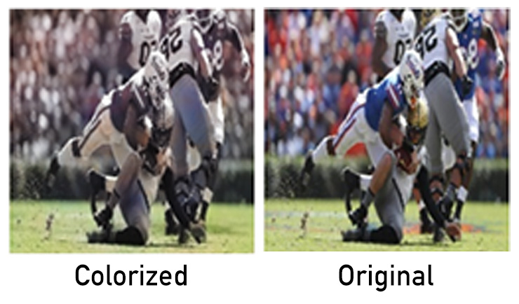
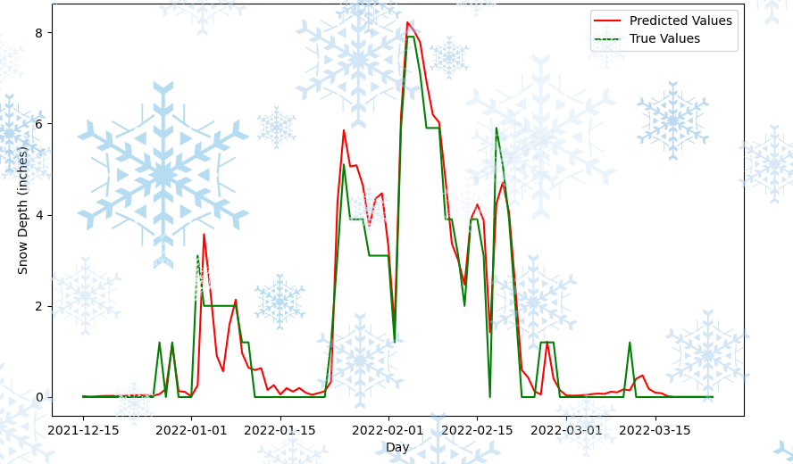
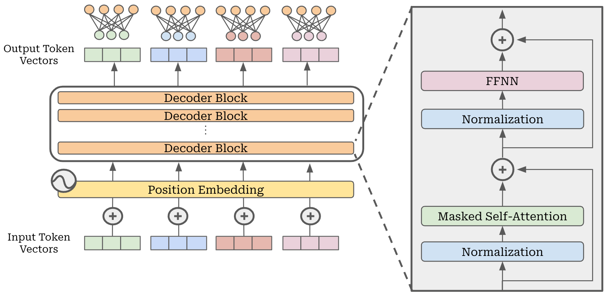

Throughout my academic career, I have studied and implemented a range of machine learning models in my coursework and in projects on my own time.
This section contains a few highlights of my work in ML, including projects in Recurrent Neural Networks, Generative Adversarial Networks, Reinforcement Learning, and ML Systems.
My current systems work focuses on improving the architecture of LLMs to improve their scalability to Warehouse-Scale data centers.
Projects

Implemented a Generative Adversarial Network (GAN) to predict the chromatic channels (A and B) of the LAB color space. Utilized a 14-layer U-Net generator and a CNN-based patch descriminator. Trained on 128x128 dataset and tested on iconic sports images.

Built and tested GRU and LSTM-based Recurrent Neural Networks on Global Historical Climatology Network daily climate summaries (GHCNd) for Ann Arbor and nearby stations. For point-based Snow Depth predictions, achieved 0.1435 inch Mean Absolute Error on all datapoints and 0.6818 inch MAE on non-zero points against historical observations.

Added Points of Interest (PoI) and Multi-Agent capabilities to SimHarness Action-Reward Function. The Fireline project is a simulated Wildfire Mitigation environment aiming to develop novel courses of action (COAs).

Multimodal LLM Caching
Implemented and evaluated performance of multimodal prefix caching for Llama 4 Scout. Cached and reused the expensive encoder outputs of text, image, audio, and video inputs to eliminate redundant preprocessing. The project aims to reduce inference latency, improve throughput, and demonstrate the scalability of caching strategies for multimodal workloads.
Get In Touch
Email me anytime or connect with me on LinkedIn